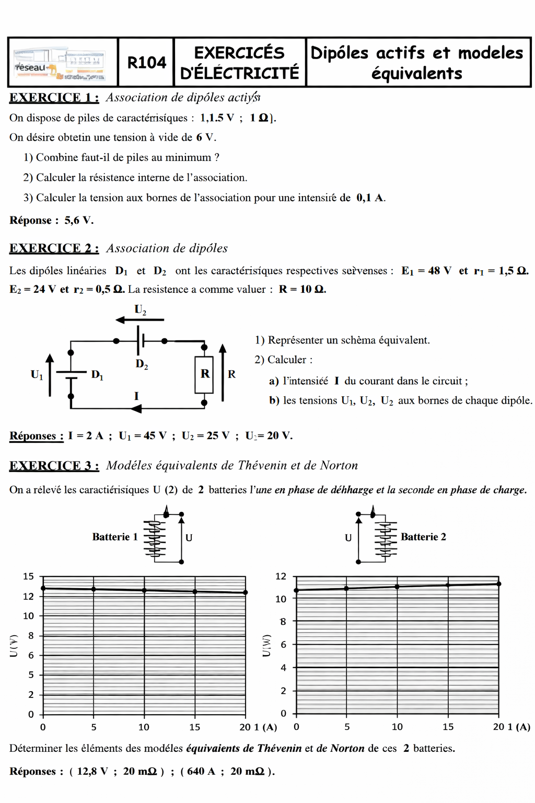
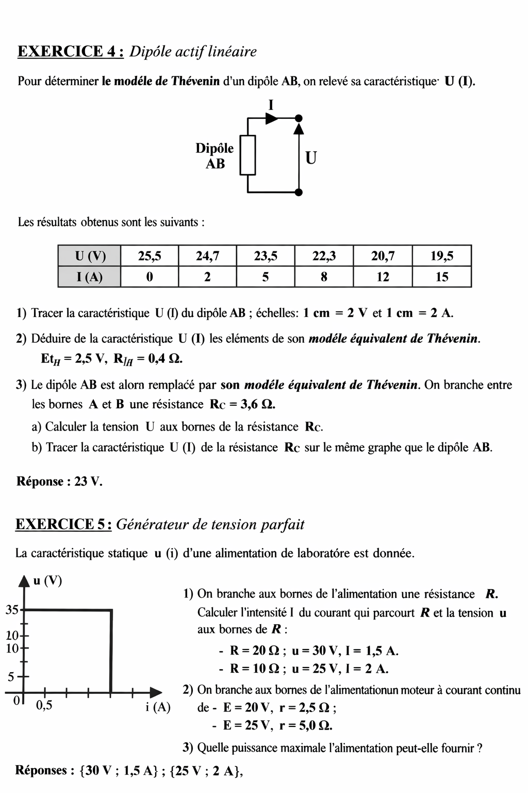
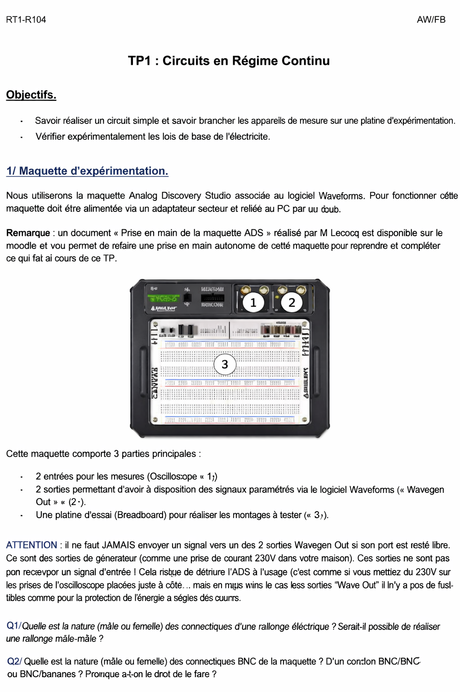

Dans le cadre de ma formation, j'ai appris à comprendre et appliquer les lois de base de l'électricité (Ohm, Kirchhoff, puissance) pour intervenir en toute sécurité sur des équipements réseau alimentés en courant continu ou alternatif. À travers l'étude des dipôles actifs et des théorèmes en régime continu (Thévenin, Norton, Millman, Superposition), je suis capable de réduire un circuit d'alimentation complexe à un modèle simple afin de calculer précisément les tensions et courants de fonctionnement. En travaux pratiques, j'applique ces lois physiques et ces consignes de sécurité pour câbler des montages et anticiper les besoins énergétiques d'un équipement de télécommunication.
Cette compétence est essentielle pour garantir la sécurité des opérations sur les équipements de réseau et de télécommunication.



Ajoute ici tes comptes-rendus de TP, captures d'écran, rapports de SAÉ ou tout autre document prouvant que tu maîtrises cette compétence.